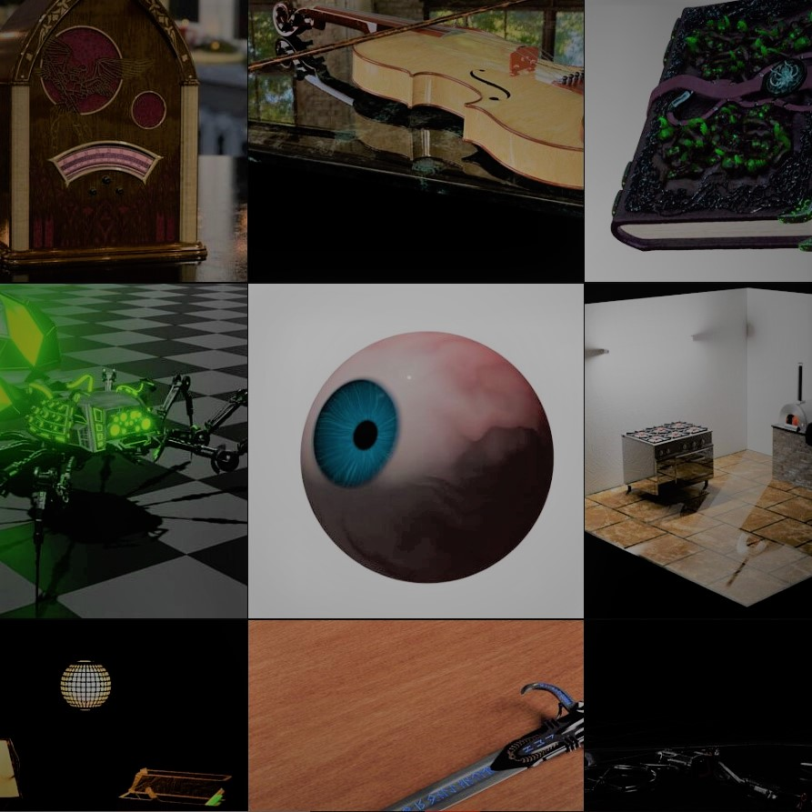

artstation 3D Art and Game Assets
3D models created for personal projects, freelance work, or as game assets.
Most of the designs presented are concept art.
However, some are available on the TurboSquid marketplace.

Control Systems
Research oriented project pursued under Professor P M Singru.
Design and Implementation of control algorithms with respect to a quarter-car model done on MATLAB-Simulink.

CAD Designs
CAD models designed on SolidWorks as a part of personal, academic, or proffesional work. For some models simulations were also conducted or SolidWorks Solver or Ansys.
Coding Projects
miscellaneous coding projects ranging from computer graphics, optimization, and computational physics to computer vision.
Majority of the projects are written either in C++ or python.